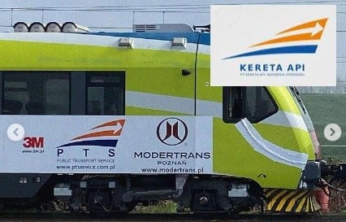

Ramai soal Perusahaan KA Polandia Menggunakan Logo Mirip KAI, Ini Tanggapan KAI
KOMPAS.com - Unggahan foto yang menampilkan perusahaan sarana perkeretaapian asal Polandia, Public Transport Service Sp. z o.o. (PTS) menggunakan logo yang mirip dengan logo lama PT Kereta Api Indonesia (PT KAI), ramai di media sosial.
Foto tersebut diunggah oleh akun X @jalur5_ pada Selasa (12/3/2024) pukul 10.06 WIB.
Dalam unggahan tersebut, disebutkan bahwa foto tersebut diambil dari Google Streetview.
“Perusahaan perawatan dan pemeliharaan sarana perkeretaapian asal Polandia, Public Transport Service Sp. z o.o. (PTS), menggunakan logo yang hampir persis dengan logo PT Kereta Api Indonesia (Persero) era 2011-2020,” tulis pengunggah.
Selain itu, pengunggah juga menambahkan bahwa penggunaan logo PTS yang mirip KAI sudah tercantum di laman resmi dan di badan kereta api.
Hingga Kamis (14/3/2024), unggahan tersebut telah dilihat lebih dari 128.700 kali dan disukai oleh 770 akun.
Sebagai informasi, PTS merupakan layanan transportasi umum yang didirikan pada 2016 dan berbasis di Warsawa.
Perusahaan ini mengoperasikan KA dengan skala nasional di seluruh Polandia. Lantas, bagaimana tanggapan PT KAI terkait kemiripan logo ini?